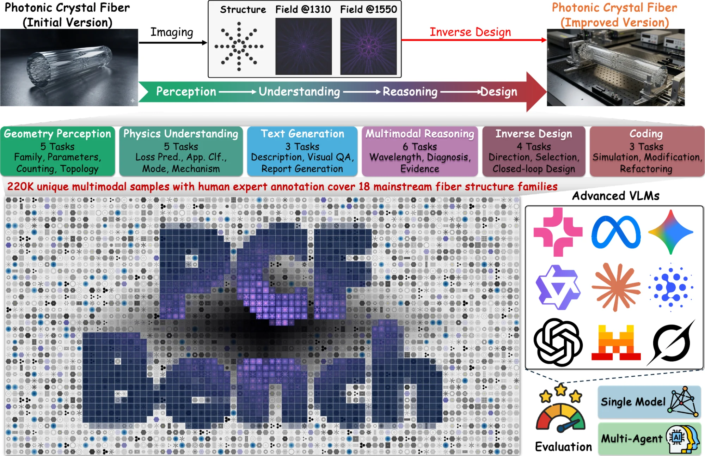
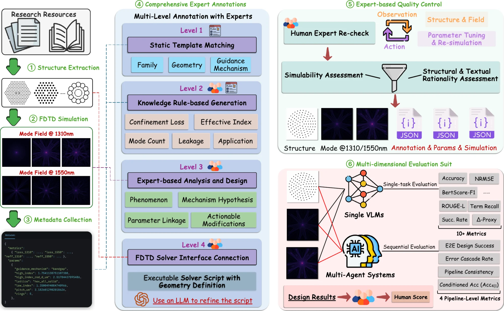

01 · Overview
A physics-grounded test for VLMs on photonic design.
Photonic crystal fibres power telecommunications, sensing and high-power laser delivery, yet designing them is still expert-driven. Can vision-language models reason about photonic physics from images, or do they only pattern-match?
We introduce PCFBench, the first comprehensive benchmark for evaluating VLMs across the full photonic crystal fibre inverse-design pipeline. Its 26 tasks follow a six-dimensional hierarchy that mirrors the real design workflow, drawn from 220K FDTD-simulated samples across 18 fibre families. PCFBench evaluates both single VLMs on isolated tasks and multi-agent systems on the full perception, physics and design pipeline.
Across 41 VLMs and 13 multi-agent systems, the results reveal a persistent perception–design gap. Accurate geometry recognition fails to translate into physically grounded design decisions, even under scaling or multi-agent coordination. Closing it calls for explicit physical grounding, not visual pattern matching alone.
- 01
Geometry Perception
5 tasks
Reads structure straight from cross-section images, from family classification and hole counting to topology analysis, pitch and hole-diameter regression, and defect localisation.
- 02
Physics Understanding
5 tasks
Reasons about optical properties, including confinement-loss prediction at 1550 nm, application identification, mechanism keywords and dispersion regime.
- 03
Text Generation
3 tasks
Writes geometry descriptions, answers physics questions and drafts full design reports, scored with BERTScore-F1 and a completeness rubric.
- 04
Multi-modal Reasoning
6 tasks
Forces joint use of structure and field images through wavelength-conditioned matching and mode discrimination, in Paired and Field-only variants.
- 05
Inverse Design
4 tasks
Turns a target into a better fibre, covering pitch and hole-diameter directions, parameter selection, closed-loop FDTD success and human-rated design quality.
- 06
Code Generation
3 tasks
Produces runnable simulation code, parametric models and refactors, checked against an executable physics oracle.

02 · The task
From an image to a better fibre.
This is what every model is asked to do. Below is one real run from the PCFBench case study, replayed step by step.
03 · Samples
Eighteen fibre families, each a structure and its light.
Every sample pairs a refractive-index cross-section with FDTD-simulated mode fields at 1310 and 1550 nm, plus four levels of physics-grounded annotation. Hover a plate to see 1310 nm, click it to read the sample.
04 · Dataset
220,000 simulated fibres, annotated in four levels.

Samples per fibre family
220,000 in total across 18 families
05 · Leaderboard
41 VLMs and 13 multi-agent systems.
One representative metric per task across the six dimensions, exactly as reported in the paper. Click any column to sort. Higher is better, except Loss (Log-MAE).
PSel = parameter-selection accuracy, CL = closed-loop FDTD success, HS = human score. The Sequential Pipeline appears in its cascaded and oracle modes.
1st2nd3rd per column, as marked in the paper.
Metric glossary
06 · Key findings
Scale alone does not close the loop.
Single models
- 1
Perception is the easy part, design is not.
No model reaches 50% on topology recognition, and perception correlates weakly with design success. Qwen3.5-122B-A10B leads topology accuracy yet reaches only 35.5% closed-loop success, while the smaller Qwen2.5-VL-7B reaches 63.8%.
- 2
Bigger is not always better.
Within the Qwen-VL family, going from 7B to 235B improves topology recognition by 25 points but lowers closed-loop success by 47 points. GPT-4o-mini outperforms both GPT-4o and GPT-5 on closed-loop design.
- 3
Text saturates, code is near-solved.
Geometry-description BERTScore clusters in a narrow 0.27 to 0.36 band. Models reproduce Meep scripts competently even when they cannot reason about the physics those scripts encode.
- 4
Multi-modal tasks expose evaluation pitfalls.
Some models score perfectly on Field-only mechanism diagnosis by defaulting to the majority class, then near zero on the Paired variant. The dual-prompt design turns this artefact into a diagnostic.
Multi-agent systems
- 5
The best coordination is backbone-dependent.
MAD leads on GPT-4o-mini (CL .731) but drops to .411 on Qwen-VL-Max, where EvoMAC, the weakest method on GPT-4o-mini, becomes the best (.732).
- 6
More agents do not mean better design.
On GPT-4o-mini, two-agent AutoGen beats far larger systems, and on Gemini-3.1-Lite a single Vanilla call ties or beats five multi-agent methods.
- 7
Domain decomposition helps, at the price of error cascade.
The Sequential Pipeline surpasses generic baselines on parameter selection, but upstream perception errors propagate downstream at a cascade rate above 60%.